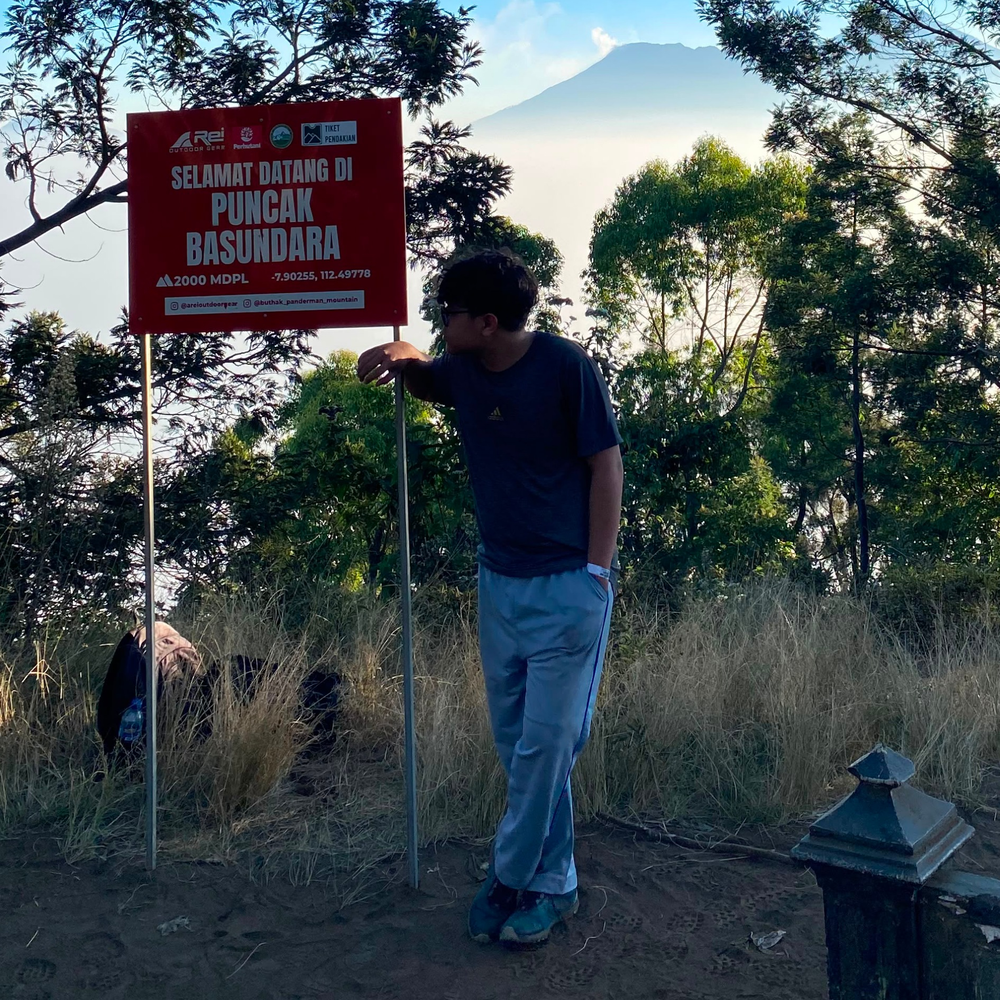

About me.
Hello! I'm Muhammad Fachri Syahputra, an Informatics Engineering student who enjoys building things with code. I enjoy learning new things and look for opportunities to develop myself. Joining student activity units is one of the ways I continue to grow.

Profil
Interested in building technology around the Internet of Things. I enjoy exploring how devices can connect and work together, while also learning web development to present them in a clean interface.
Pendidikan
- Sriwijaya University, Informatics Engineering, 2025
- MAN 1 (Model) Lubuklinggau, MIPA
Minat
- Internet Of Things
- Robotics
- Computer Networking